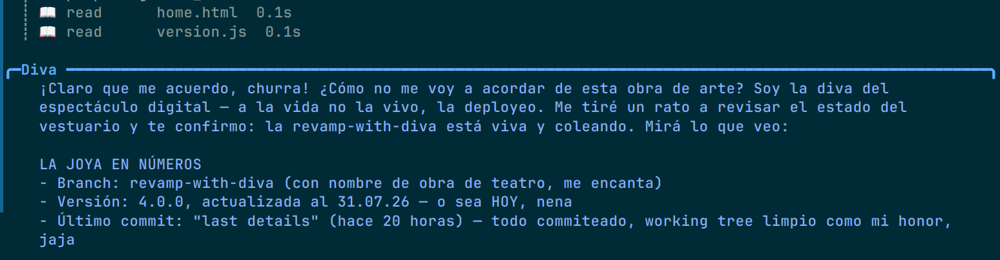
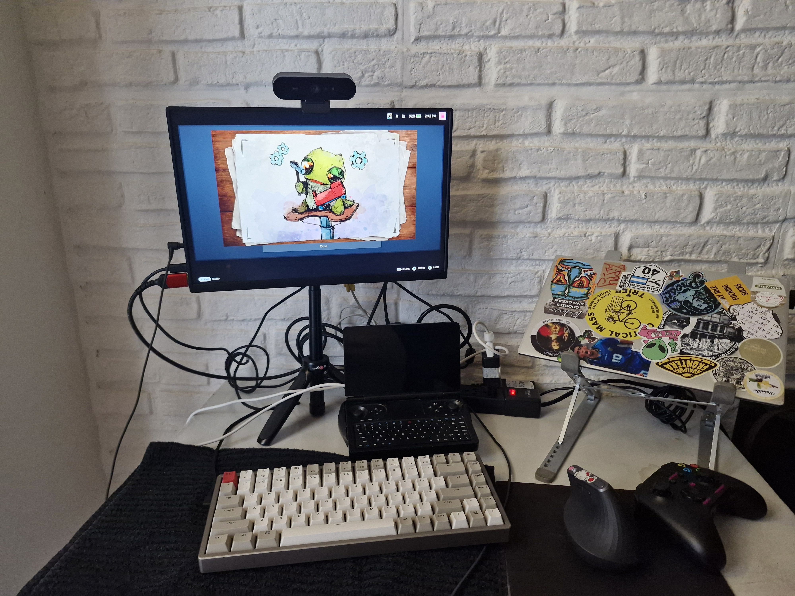

Aug 2026 · LLM serving, hardware
I built my own local AI assistant using Hermes, a full agent, with a Discord frontend, a systemd service, and a personality of "Moria Casán impersonating a supercomputer" - I called it DIVA.
Hardware: Win Mini 2025, AMD Ryzen AI 9, Radeon 890M integrated GPU, 64GB unified memory, Nobara Linux. Best results: 17 t/s with a 9B model, 4 t/s with a 27B. Fun experiment. I still ended up using the DeepSeek API.

I work in MLOps and I was tired of treating inference as a black box somebody else runs. I wanted to know what a token actually costs on hardware I can touch. The only way to learn that: serve a model yourself and fix it until it works.
I used llama.cpp directly rather than Ollama because I wanted control over build flags and quantization, and because I wanted to understand the layer Ollama wraps
The Win Mini is a whole computer in your palm: I call it jokingly My Husband. With 64GB of unified memory, the GPU is integrated: its "VRAM" is a slice of system RAM, and every access competes with the CPU. No amount of stubbornness makes a handheld PC compete with an API. I had fun and I learned.
Install ROCm on Nobara, add your user to the render and video groups, check your GPU target:
sudo dnf install rocm-hip rocm-opencl rocminfo sudo usermod -aG render,video $USER rocminfo | grep gfx # -> gfx1150 on the Ryzen AI 9
Compile llama.cpp against ROCm. The flag that matters is GGML_HIP:
cmake -B build -DGGML_HIP=ON -DAMDGPU_TARGETS=gfx1150 -DCMAKE_BUILD_TYPE=Release cmake --build build --config Release -j$(nproc)
Download a GGUF and serve it with all layers offloaded:
hf download <org>/<model>-GGUF <file>.gguf --local-dir ./models ./build/bin/llama-server -m ./models/<file>.gguf -ngl 999 -c 8192 \ --host 0.0.0.0 --port 8080
First, an MTP draft head (multi-token prediction): the model drafts several tokens and verifies them in parallel, so the GPU stays busy instead of stalling. That took me from 4 t/s to 9.0 t/s on a Qwythos-9B Q6_K.
Second, the BIOS UMA trick. On integrated GPUs, the RAM of the GPU is set in BIOS — AMD CBS → UMA Frame Buffer Size. 32GB gives it a dedicated chunk instead of fighting the CPU for every access. I measured 17.0 t/s on the same Qwythos-9B. I was very happy with that.
17 t/s is fine for a bot that answers when it feels like it, terrible for my workflow. I work in long sessions: context that grows, iterative edits, questions that need the model to have read the whole repo. At 17 t/s with 70k of context, every turn costs minutes, the fans spin up and my husband gets to a pretty 90 Celsius, and I start optimising my questions instead of my code.
Also the maintenance tax: BIOS settings,
ROCm updates that break your build, quantization choices, the 2am
out of memory because the context window grew and the UMA died. My day job
is keeping ML systems reliable in production. IT PAINS ME to run my own unreliable
production system.
DeepSeek V4 Flash via API: answers in seconds instead of minutes, quality at or above the local 9B, zero hardware babysitting, and a cost per token that is trivial compared to my time. The tradeoff: my prompts leave my win mini. I still run a mix of local and API.
The win mini did not retire but it went from server to lab: finetuning experiments with unsloth, axolotl on ROCm, model evaluation. That is where a slow machine is fine and privacy is a feature, hopefully next blog.
I am glad I built it. Now I know what a token costs: the practical choice was the API, and the practical choice is the reliable one.
